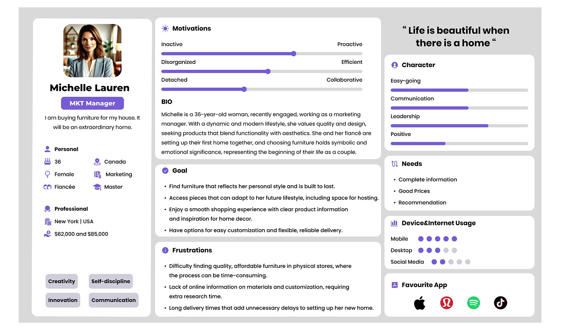

VIVA - Furniture Mobile App
Team
- Johnnas - Project Manager
- Pei - UX/UI Designer
Duration
- Oct 2024 - Dec 2024
Tools
- Figma
- Photoshop
- Miro
When I realized the importance of online shopping for new home buyers, I approached it with a structured and strategic design methodology. I began by conducting research on related companies such as IKEA and Structube, which helped me create a competitive analysis that accurately reflected the pros and cons of their apps and identified key problems. Additionally, I developed personas, journey maps, and user flows to ensure that the new feature stood out and effectively appealed to potential buyers.
Design Process
It is a simple yet structured approach that I created to document and demonstrate the steps I have completed. By following this process, I can maintain a clear plan and ensure a smooth progression throughout the project. It allows me to stay organized, refine my ideas, and effectively bring my furniture design concept to life.
Project Timeline
This showcases the period of time I have spent on this furniture case study, breaking down the entire process from scratch to the final outcome. I have completed each task weekly, providing a clear view of my progress. This structured breakdown helps me track my workflow, review completed steps, and stay prepared for upcoming tasks, ensuring an organized and efficient design process
SWOT Analysis
This step gives me insight into how the brand balances affordability and strong brand recognition while facing challenges like limited customization. Personally, I like their ability to make well-designed furniture accessible, but I also see an opportunity for them to expand personalization options. This analysis helps me reflect on how businesses must constantly evolve to meet user needs while staying true to their core values.
About Strutube, I noticed it presents the trendy, and budget-friendly furniture with a strong online presence. But the brand doesn’t stand out much, and some people question its quality. I think there’s a big chance to improve customization and sustainability, but competing with bigger brands won’t be easy. It really made me think about how brands need to find their unique to stand out.
Competitor Analysis
I presented a comprehensive chart below, highlighting the strengths, weaknesses, and strategies of both competing brands. This analysis helps identify key opportunities for VIVA to improve its interface design and differentiate itself in the market. By examining how competitors approach user experience, product features, and design elements, we can better understand where VIVA can offer a more intuitive, user-friendly platform that meets the unique needs of its users.
VIVA makes difference
- Enhanced Navigation - Simplified and intuitive interface for browsing the app.
- Customizable Products - Personalization options not found in competitors.
- Advanced AR IntegrationAdvanced - AR Safe , Integration Real-time furniture visualization in user spaces.
- Efficient Support - Live chat and dynamic FAQs for immediate assistance.
- Easy Checkout - Safe, faster and more convenient process.
Personas
She is a 36-year-old marketing manager and recent engaged, values quality and design as she and her fiancé set up their first home, seeking furniture that blends functionality with aesthetics to mark the start of their new life together.
He is a 42-year-old architect and interior designer, seeks stylish, and durable furniture to create elegant, adaptable spaces for his clients, valuing pieces that blend versatility with budget-friendly options.
Journey Map
Michelle’s journey to purchasing furniture begins when she decides to explore her options through a mobile app. She starts by downloading the app, and as she browses through various furniture options, she encounters both positive and negative experiences, such as an overwhelming number of choices without clear filters. Once she adds items to her cart, she proceeds to checkout but faces some frustration with the payment process, particularly issues with her card being declined. This moment could be improved by offering a more intuitive payment experience. After successful payment, she receives confirmation and delivery options, but is confused by the variety of delivery choices available. By identifying these touch points, we can focus on improving her experience, especially with payment, by making it smoother and more reliable.
Style-Tile
The brand aims to create a cozy, inviting atmosphere that appeals to users by offering luxury furniture made from high-standard materials. The color palette reflects this vision, incorporating warm browns and beiges to evoke a sense of comfort and sophistication, while the inclusion of green tones adds a touch of tranquility and calm. This combination not only highlights the brand's premium offerings but also ensures the users feel relaxed and drawn to the elegant, yet peaceful aesthetic of the furniture.
Low-Fidelity Prototpying
High-Fidelity Prototpying
Final Deliverable
Quick Action - Sofa
The app has a "search" field to type specific name of the furniture such as sofa, allowing users to find their ideal item instantly.
Specific Category
This video showed that it was easy to click on a specific piece of furniture to find the ideal one. The design aimed to improve the variety of items by narrowing them down to specific categories.
Delete Process
I built a design system using design tokens, establishing a clear system setting for colors, fonts, spacing, and components. This system streamlined the workflow, reducing time spent on repetitive decisions while ensuring a cohesive and professional look throughout the website.
Subscribe Option
This final video demonstrates how artists can book a two-hour studio session, explore different studio options, and add extra services like equipment rentals. It highlights the intuitive booking process, ensuring a seamless and efficient experience.
What I learned
Throughout this process, we faced challenges in integrating 3D elements into the app design, which required careful planning and execution. Thankfully, with the help of my team, we were able to collaborate and create initial sketches that served as the foundation for presenting the 3D concepts. We discussed various ways to effectively incorporate these elements into the app interface, considering both user experience and technical constraints. By maintaining open communication and working together, we successfully met our deadlines. Additionally, we gathered valuable feedback from both peers and professionals, which played a crucial role in refining the design and ensuring the solution was both functional and user-friendly.
On a personal level, this project has significantly enhanced my ability to communicate effectively within a team. I learned how to articulate my ideas clearly and share potential solutions, which was especially important when tackling complex challenges. For example, I suggested creating a specific category to streamline the shipping process, which ultimately reduced time and improved efficiency. This experience has strengthened my confidence in conveying my plans and collaborating with others to arrive at the best possible outcomes. It also taught me the importance of being proactive in sharing ideas and listening to feedback, which has been invaluable for my professional growth.
You May Like

Let's connect today!
Hit me up!
Send a messagePei ©2025